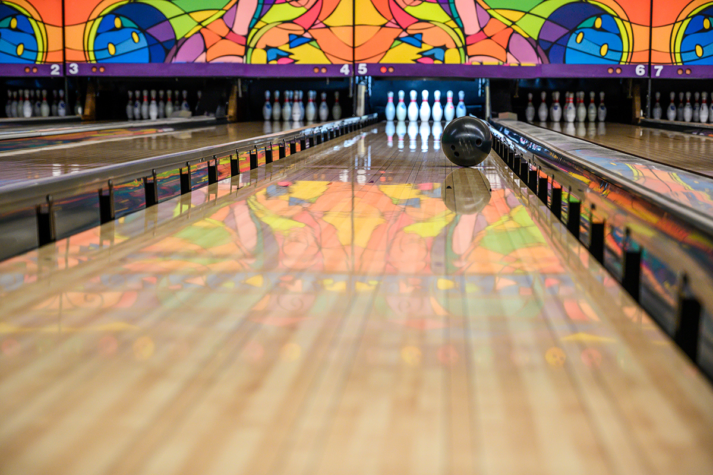
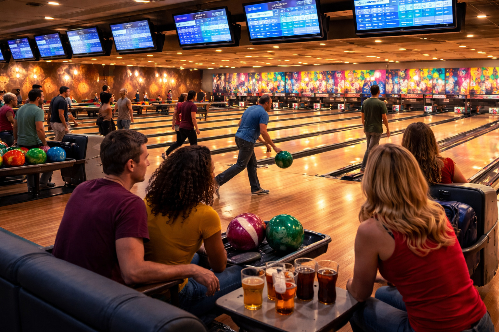
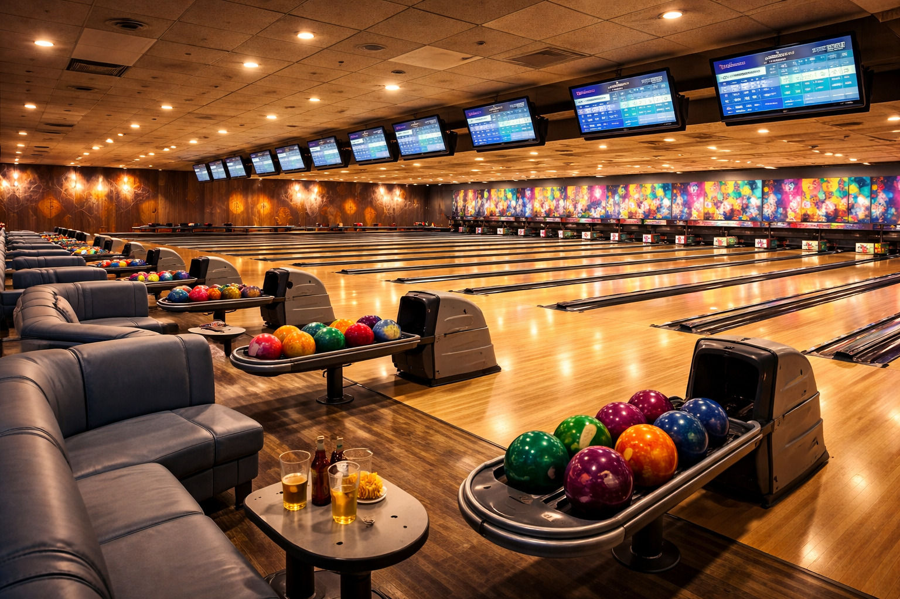
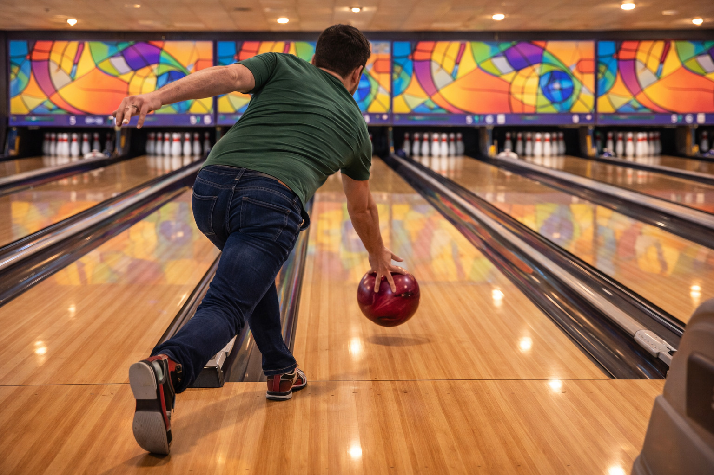
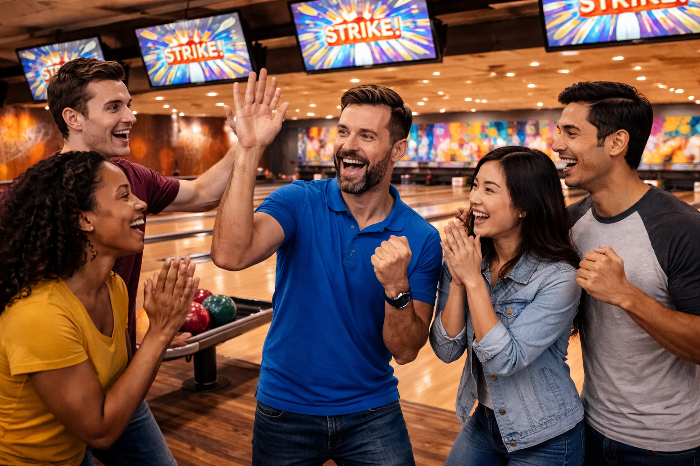

Skill
Bowling develops coordination, consistency, and body control. A small adjustment in footwork or release can change the result dramatically.
A single-page hobby site about practice, strategy, community, and competition.
✦ 🎳 ✦
Bowling is both a competitive sport and a lifelong hobby. It blends repetition, mechanics, lane reading, focus, and community. For me, bowling is a hobby that rewards patience and steady improvement.
Unlike many hobbies that depend on weather or a large group, bowling can be practiced year-round. A player can work on timing, release, spare shooting, and strategy in every session.
Bowling develops coordination, consistency, and body control. A small adjustment in footwork or release can change the result dramatically.
It is not only about throwing hard. Good bowlers watch the lane pattern, choose proper angles, and make smart adjustments.
Leagues, tournaments, and casual practice nights create opportunities to meet people with similar interests.

No Ai Prompt was used here. This image is a real photo I took at a bowling alley.
This hobby is for people who enjoy measurable improvement, competition, and social interaction. Beginners can enjoy bowling casually, while experienced players can focus on averages, tournament play, and lane transition.
I am drawn to bowling because it lets me combine discipline with fun. It is easy to start, but difficult to master, which keeps the hobby interesting over time.
AI prompt used: “Generate a semi-realistic group of bowlers in a modern bowling center, friendly and energetic, coordinated visual style, bowling bags and shoes visible.”
| Type | Main Goal | Typical Activity |
|---|---|---|
| Casual | Fun | Weekend games with friends |
| League | Consistency | Weekly team competition |
| Tournament | Performance | Travel and competitive events |
Bowling can be enjoyed throughout the year, which makes it an ideal hobby for a regular schedule. Many players practice during weekday evenings, bowl leagues during set nights, and compete in tournaments on weekends.
The best times often depend on goals. Casual bowlers may prefer slower public sessions, while competitive bowlers often seek lane conditions that match league or tournament play.
| Time | Purpose | Benefit |
|---|---|---|
| Weekday Evening | Practice | Build repetition and spare accuracy |
| League Night | Competition | Apply skills under pressure |
| Weekend Morning | Focused training | Test equipment and adjustments |
Because bowling is indoors, it works well in every season. It is especially appealing during very hot summers and colder months when outdoor sports are less comfortable.

AI prompt used: “Create a semi-realistic evening bowling league scene with bowlers on several lanes, score monitors visible, warm indoor lighting, and a consistent visual style.”
Bowling takes place in bowling centers, but the experience can vary greatly depending on the location. Some centers focus on family entertainment, while others are better for league practice and serious competition.
The best places to bowl usually have well-maintained lanes, good lighting, reliable approaches, and a supportive community of players.
These are convenient for regular practice and social bowling.
These locations expose bowlers to more difficult lane conditions and stronger competition.
These settings often help new bowlers connect with teams, coaches, and local leagues.

AI prompt used: “Generate a semi-realistic modern bowling center interior with multiple lanes, polished wood, ball returns, seating, and balanced sports photography lighting.”
Getting started in bowling is simple. A new player needs a bowling center, rental shoes, a ball that fits comfortably, and a willingness to practice the basics.

AI prompt used: “Create a semi-realistic instructional sports image of a bowler practicing release and balance, clear body posture, bowling lane visible, consistent indoor lighting.”
I enjoy bowling because it gives clear feedback. Every frame reveals something about timing, accuracy, and decision-making. That constant feedback makes improvement satisfying.
Bowling also provides stress relief, competition, and connection with other people. It is one of the few hobbies that can feel relaxing during casual play and intense during serious competition.
Bowling teaches concentration, patience, and emotional control.
Tracking scores, averages, and spare percentages makes progress easy to measure.
The sound of the pins, the challenge of lane adjustments, and the social atmosphere make the hobby memorable.

AI prompt used: “Generate a semi-realistic celebratory bowling moment after a strike, energetic but clean composition, modern alley background, consistent style with previous images.”
I used AI to help brainstorm site structure, write starter HTML/CSS, and generate image prompts that match one visual style. I then edited the content for clarity, formatting, and course requirements.
Create a one-page hobby website using HTML, embedded CSS, and a little JavaScript. Use section tags as separate pages, make the What section load first, and include header, nav, main, and footer.
Write content for a bowling hobby site with sections for What, Who, When, Where, How, and Why. Each section should include at least three items and be student-friendly.
Generate consistent semi-realistic image prompts for a bowling hobby website so all figures match the same visual style.
AI prompt used: “Create a semi-realistic collage representing website planning, coding, and bowling visuals in one consistent sports-themed design.”